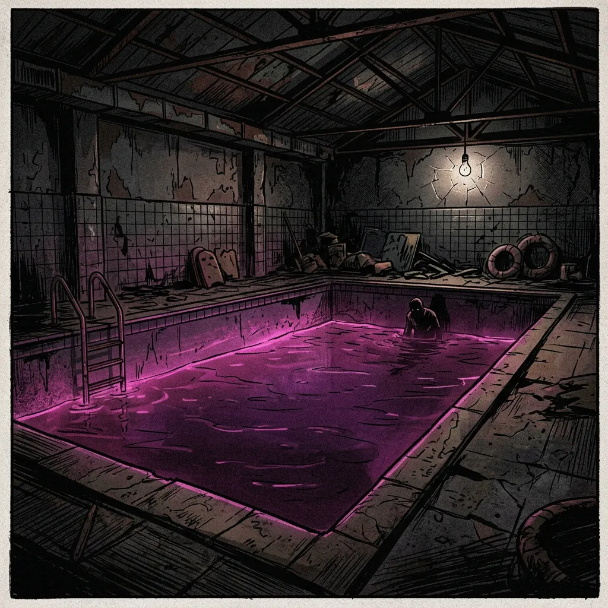
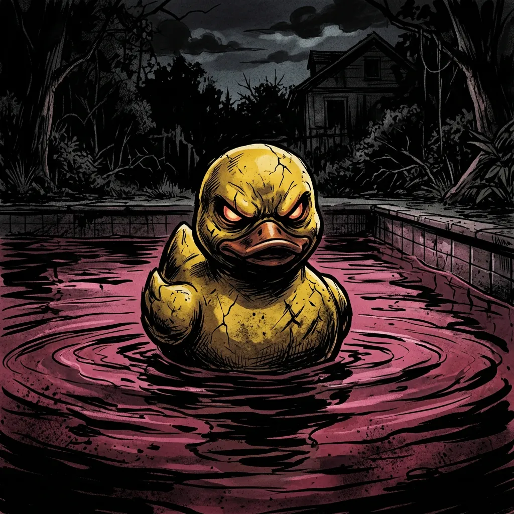
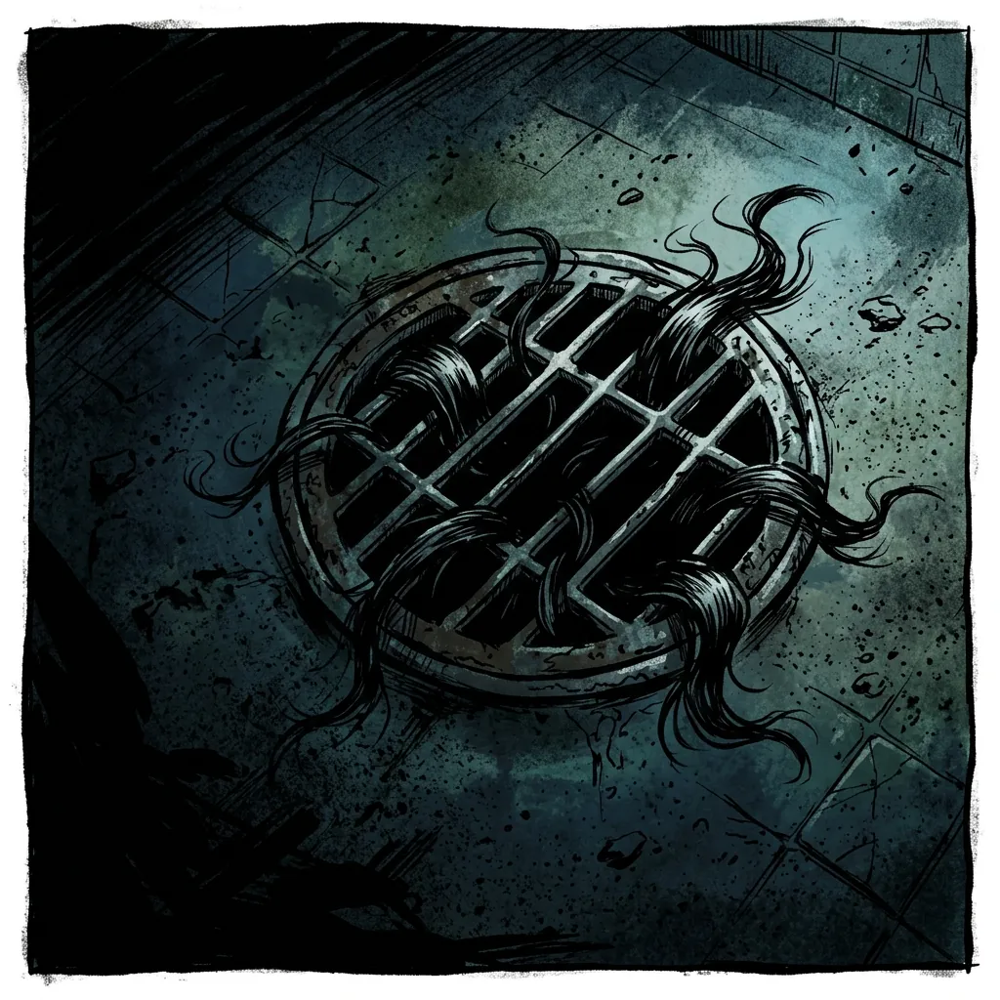

Детская зона (Ловушка 4-А)
Желтые резиновые уточки являются автономными сенсорами движения. При фиксации паники они стягиваются к объекту для блокировки дыхательных путей. Если уточка смотрит на вас — не дышите.
Этот адрес зарезервирован для персонала. Вернитесь к гостевой странице бассейна.
Открыть «Дельфин»Объект «Дельфин» выполняет функцию первичной фильтрации и «замачивания» сырья перед отправкой на Фабрику. Розовая вода — результат химической реакции био-энзимов с остаточным страхом гостей.



Желтые резиновые уточки являются автономными сенсорами движения. При фиксации паники они стягиваются к объекту для блокировки дыхательных путей. Если уточка смотрит на вас — не дышите.
Запрещается вступать в контакт с волосяными комками в стоках. Они обладают остаточной памятью утилизированных гостей. Если комок пытается заговорить, скажите пароль: «Я лысый».
Зона кормления. Доступ строго запрещен. Если вы случайно оказались там, медленно отплывите к разделителю. Не смотрите Ему в глаза.
Находится на дне резервуара. Для перехода на следующий уровень смены персоналу необходимо набрать в легкие воду.
Если вода внезапно стала черной, немедленно покиньте резервуар. Это означает, что Инспектор по сырью уже спустился в бассейн.